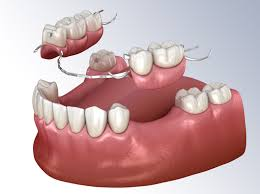

Prótesis Dentales: Recupera la Funcionalidad y Estética de tu Sonrisa
Las prótesis dentales son dispositivos diseñados para reemplazar dientes ausentes y restaurar la función masticatoria, la estética facial y la confianza en uno mismo. En nuestra clínica, entendemos la importancia de tener una sonrisa completa y funcional, por lo que ofrecemos una variedad de opciones de prótesis dentales adaptadas a las necesidades individuales de cada paciente
Tipos de Prótesis Dentales:
- Prótesis Parciales Removibles: Estas prótesis están diseñadas para reemplazar uno o varios dientes perdidos y se sujetan en su lugar mediante ganchos o clips que se enganchan a los dientes adyacentes. Son una opción versátil y económica para restaurar la función masticatoria y la estética de la sonrisa.
- Prótesis Completa (Dentaduras Postizas): Las dentaduras completas se utilizan cuando se han perdido todos los dientes en un maxilar. Estas prótesis se apoyan en la encía y se sostienen en su lugar mediante succión o adhesivos dentales. Proporcionan una solución eficaz para restaurar la función masticatoria y la estética facial.
- Prótesis Fijas (Puentes Dentales): Los puentes dentales son prótesis fijas que se utilizan para reemplazar uno o más dientes perdidos. Están anclados en su lugar mediante coronas dentales colocadas sobre los dientes naturales adyacentes o sobre implantes dentales. Proporcionan una solución duradera y estética para restaurar la función y la apariencia de la sonrisa.
- Prótesis sobre Implantes: Estas prótesis se apoyan en implantes dentales colocados quirúrgicamente en el hueso maxilar o mandibular. Proporcionan una solución estable y segura para reemplazar dientes perdidos, restaurando la función masticatoria y la estética de la sonrisa de manera efectiva.
En nuestra clínica, nos comprometemos a brindar opciones de prótesis dentales de alta calidad que se adapten a tus necesidades específicas y te ayuden a recuperar una sonrisa completa y funcional. Nuestro equipo de profesionales está dedicado a proporcionar un cuidado compasivo y personalizado para asegurar que alcances tus objetivos dentales de manera segura y efectiva. ¡No dejes que la pérdida de dientes te impida sonreír! Contáctanos hoy mismo para explorar tus opciones de prótesis dentales y dar el primer paso hacia una sonrisa renovada y confiada.
